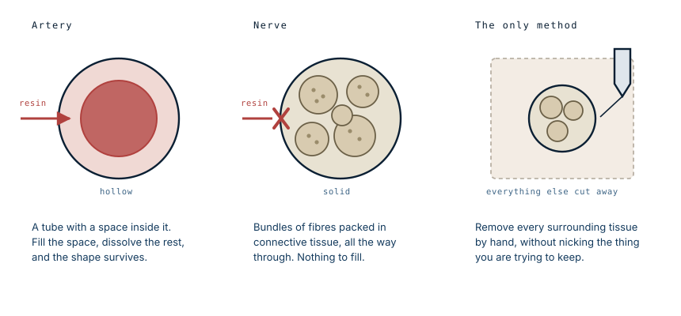

Two students, 1,500 hours, and no shortcut
In the autumn of 1925 two medical students in Missouri were given a body and an instruction: start at the base of the brain, work downward, and take out the nervous system in one continuous piece. It took them a year. There are four of these in the world.
Why they were chosen
Every student in their class had to dissect a human arm. Schalck and Ramsdell's arms came out so much cleaner than anyone else's that the faculty gave them a whole body.
That is a reasonable way to select for this work, because arm dissection is where you find out whether someone can follow a nerve. The nerves of the arm branch repeatedly, run alongside vessels of similar appearance, and disappear into muscle. A student who can trace them without cutting them has the hands for the job.
Why there is no faster way
This is the part worth understanding, and it explains the number four.
The circulatory system can be isolated chemically. Blood vessels are tubes: fill them with resin, dissolve everything else, and the shape survives as a cast. It takes days, and vascular casts exist in their thousands.

A nerve has no lumen. It is solid all the way through: bundles of fibres wrapped in connective tissue, wrapped again in an outer sheath. There is no space to inject, nothing to fill, and no chemical that dissolves muscle and fat while leaving nerve tissue intact.
So the only method is subtraction. Every gram of muscle, fat, fascia and bone has to be cut away from around the nerves by hand, without nicking the thing being kept. There is no version of this that goes faster. The 1,500 hours are not inefficiency; they are the cost of the only technique that works.
Four exist because almost nobody has ever been willing to spend a year finding out.
What made it so difficult
Three things, mostly.
Nerves do not stand out. They are pale, and so is the fascia around them, and so are tendons. Under the lighting of a 1920s dissecting room, a fine nerve branch and the connective tissue beside it look much the same. Blood vessels at least announce themselves by colour.
They branch beyond the point of usefulness. Every trunk divides, and every division divides again, down to threads too fine to hold. At some point the dissector has to decide where a branch stops being recoverable, and that judgement has to be made thousands of times.
They will not hold themselves up. A nerve freed from its surroundings has no structure. It collapses, tangles, and dries. Schalck and Ramsdell dealt with this by wrapping each cleared nerve in cotton wadding soaked in preservative as they went, so that what they had already won was protected while they worked on the next section.
The finished dissection was mounted on a board of shellacked wood and labelled. The Journal of Osteopathy reported in June 1926 that the brain, spinal cord, nerve trunks and their branches, the sympathetic nerves, the ganglia and the vagus were all intact and free of every other tissue, and that nothing like it had been done there before.
What it shows that a textbook cannot
Anatomical drawings show nerves as clean lines on a white page, drawn at whatever thickness makes the diagram legible.
The dissection shows proportion instead. The spinal cord is startlingly short — it ends around the first or second lumbar vertebra, not at the base of the spine, and everything below that is a spray of loose roots. The nerve supply to each arm emerges as a dense braid at the neck. The branches thin steadily as they travel outward and still reach the fingertips and the toes.
Seen whole, the thing is unmistakably the shape of a person, for the same reason a vascular cast is: the network has to reach every part of the body that feels or moves, so its outline is the body's outline.
Whose body it was
The dissection is a person, and the record does not tell us who.
Anatomical donation in the 1920s operated under very different rules from today's. Cadavers used in American medical schools of that era frequently came from unclaimed bodies — people who died poor, or without family to object — rather than from anyone who had agreed in advance. That is the uncomfortable background to a great deal of anatomical teaching material from the period, and it is worth stating plainly rather than admiring the object without it.
Nothing about that diminishes what Schalck and Ramsdell achieved. It does mean the specimen has two histories, and only one of them is recorded.
What this case teaches
The rarity is a technical fact, not a curiosity. Vessels are hollow, so the circulatory system can be isolated by filling it and dissolving everything else, which is why vascular casts are common. Nerves are solid, so there is nothing to fill and no chemical shortcut, and the only route is to remove an entire human body from around them by hand without damage. Two students did it in a year, and in the century since, only three other people have.